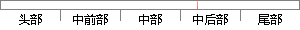

其中定义了3种任务状态，就绪、延时和挂起，定义如下图所示。
片段位置图

相似结果
相似片段：如行(Executing)、就绪(Ready)、挂起(Suspended) ...任务的当前状态,包括就绪态、阻塞态、延时态和挂起...关于信号量Iota定义了3个操作: l 一个信号量可以...
| 标题 | 《基于SOC的实时操作系统的研究》 |
| 对比库 | 中国学位论文全文数据库 |
| 作者 | 高丰 |
| 机构 | 浙江大学 |
| 分类 | 通信与信息系统 |
| 年份 | 2002 |
| 相似率 | 63.64% （轻度抄袭） |
※ 片段修改建议 ※
近似词参考：- 就绪：停当
- 任务：使命 义务
- 定义：界说
- 状态：状况
- 其中：此中 个中
系统自动生成语句：此中界说了3种使命状况，停当、延时和挂起，界说如下图所示。
注：本片段修改建议为系统自动生成，仅供参考。